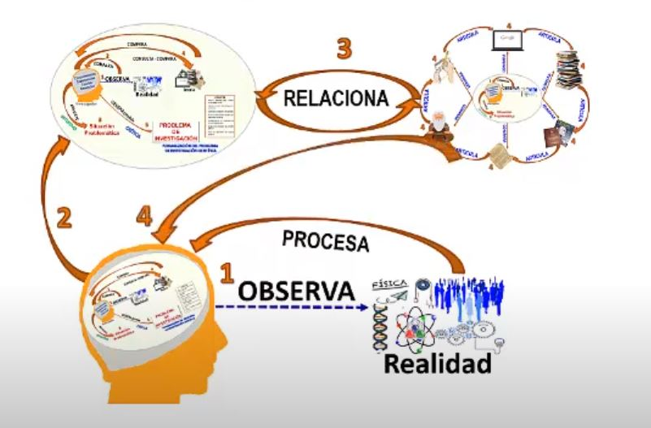

El primer paso de investigación es el descubrimiento de un problema que requiere de una solución. Se entiende por problema como aquellos hechos o circunstancias que dificultan que se realice un proceso de forma normal.
- Plantearse un problema significa encontrar un punto el cual amerita realizar una indagación, puesto que, hay conocimientos insuficientes o poco confiables -
Un problema de investigación es un conjunto de interrogaciones que nos hacemos en relación a algún aspecto de la realidad. Es una inquietud o deseo de saber. Por lo cual empieza preguntándote ¿Qué es lo que quiero saber? ¿Qué temas son interesantes en mi disciplina? ¿Cuáles son los motivos para seleccionar ese tema? ¿Qué se pretende lograr con esa búsqueda? ¿Qué beneficios tendría hacer esa investigación?
Se recomienda tener alguna referencia o poder relacionarse con dicho tema. Toda definición del problema requiere de tomar en cuenta factores como la Revisión de fuentes (revistas, libros, catálogos, etc.) que existen sobre el tema, al menos de los últimos 6 meses, e informarse sobre los temas afines. Los criterios para determinar la pertinencia de un tema son: Novedad (No se ha tratado o se ha tratado poco), Necesidad e importancia, Resolución (contribuya a resolver un problema), Pertinencia (Viables para el área de conocimiento o disciplina).
.

Es importante condensar la idea en una frase, en este caso el título del Estudio. Se requiere precisar el tópico o problema a estudiar señalando el tiempo y lugar específico del tema elegido.
Para clarificar más el cómo seleccionar y delimitar el problema, ver el video siguiente.
De ahí que, para definir un problema, debes considerar TEMA y concretar su orientación al elegir la perspectiva de tiempo y espacio desde la cual se desea trabajar. Por lo que es relevante delimitarlo con QUÉ ME INTERESA DE ESE TEMA, CUÁNDO (período o fecha específica en qué se centrará la investigación) y DÓNDE sucede ese tema (lugar geográfico en que se enfocará la información de la investigación).